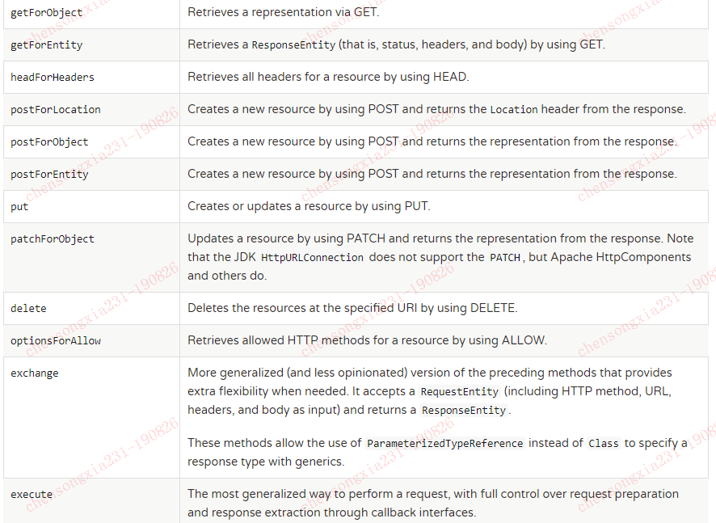

目录
在项目中，当我们需要远程调用一个HTTP接口时，我们经常会用到RestTemplate这个类。这个类是Spring框架提供的一个工具类。Spring官网对它的介绍如下：
RestTemplate: The original Spring REST client with a synchronous, template method API.
从上面的介绍中我们可以知道：RestTemplate是一个同步的Rest API客户端。下面我们就来介绍下RestTemplate的常用功能。
RestTemplate提供高度封装的接口，可以让我们非常方便地进行Rest API调用。常见的方法如下：
表格：RestTemplate的方法

上面的方法我们大致可以分为三组：
RequestEntity 参数，可以自己设置HTTP method, URL, headers和body。返回ResponseEntity。一般情况下，我们使用第一组和第二组方法就够了。
@Bean
public RestTemplate restTemplate(ClientHttpRequestFactory factory) {
RestTemplate restTemplate = new RestTemplate(factory);
return restTemplate;
}
@Bean
public ClientHttpRequestFactory simpleClientHttpRequestFactory() {
SimpleClientHttpRequestFactory factory = new SimpleClientHttpRequestFactory();
factory.setReadTimeout(5000);
factory.setConnectTimeout(15000);
//设置代理
//factory.setProxy(null);
return factory;
}创建RestTemplate时需要一个ClientHttpRequestFactory，通过这个请求工厂，我们可以统一设置请求的超时时间，设置代理以及一些其他细节。通过上面代码配置后，我们直接在代码中注入RestTemplate就可以使用了。
1. 普通接口调用
Map<String, String> vars = Collections.singletonMap("hotel", "42");
//通过GET方式调用，返回一个String值，还可以给URL变量设置值（也可通过uriTemplateHandler这个属性自定义）
String result = restTemplate.getForObject(
"https://example.com/hotels/{hotel}/rooms/{hotel}", String.class, vars);
String url = "http://127.0.0.1:8080/hello";
JSONObject param = new JSONObject();
//restTemplate会根据params的具体类型，调用合适的HttpMessageConvert将请求参数写到请求体body中，并在请求头中添加合适的content-type；
//也会根据responseType的类型（本列子中是JSONObject），设置head中的accept字段，当响应返回的时候再调用合适的HttpMessageConvert进行响应转换
ResponseEntity<JSONObject> responseEntity=restTemplate.postForEntity(url,params,JSONObject.class);
int statusCodeValue = responseEntity.getStatusCodeValue();
HttpHeaders headers = responseEntity.getHeaders();
JSONObject body = responseEntity.getBody();2. 添加Header和Cookie
有时候，我们需要在请求中的Head中添加值或者将某些值通过cookie传给服务端，那么上面这种调用形式就不太满足要求了。
UriComponents uriComponents = UriComponentsBuilder.fromHttpUrl("127.0.0.1:8080").
path("/test").build(true);
URI uri = uriComponents.toUri();
RequestEntity<JSONObject> requestEntity = RequestEntity.post(uri).
//添加cookie(这边有个问题，假如我们要设置cookie的生命周期，作用域等参数我们要怎么操作)
header(HttpHeaders.COOKIE,"key1=value1").
//添加header
header(("MyRequestHeader", "MyValue")
accept(MediaType.APPLICATION_JSON).
contentType(MediaType.APPLICATION_JSON).
body(requestParam);
ResponseEntity<JSONObject> responseEntity = restTemplate.exchange(requestEntity,JSONObject.class);
//响应结果
JSONObject responseEntityBody = responseEntity.getBody();3. 文件上传
上面两个列子基本能覆盖我们平时开发的大多数功能了。这边再讲个文件上传的列子（RestTemplate功能还是蛮全的）。
public Object uplaod(@RequestBody JSONObject params) throws Exception{
final String url = "http://localhost:8888/hello/m3";
//设置请求头
HttpHeaders headers = new HttpHeaders();
headers.setContentType(MediaType.MULTIPART_FORM_DATA);
//设置请求体，注意是LinkedMultiValueMap
FileSystemResource resource1 = new FileSystemResource("D:\\dir1\\ss\\pic1.jpg");
FileSystemResource resource2 = new FileSystemResource("D:\\dir1\\ss\\pic2.jpg");
MultiValueMap<String, Object> form = new LinkedMultiValueMap<>();
form.add("file", resource1);
form.add("file", resource2);
form.add("param1","value1");
HttpEntity<MultiValueMap<String, Object>> files = new HttpEntity<>(form, headers);
JSONObject s = restTemplate.postForObject(url, files, JSONObject.class);
return s;
}上面的代码中上传了两个本地图片，通过下面代码可以顺利接收。
@RequestMapping("/m3")
public Object fileUpload(@RequestParam("file") MultipartFile[] files, HttpServletRequest request) throws Exception {
//携带的其他参数可以使用getParameter方法接收
String param1 = request.getParameter("param1");
Response response = new Response();
if (files == null) {
response.failure("文件上传错误,服务端未拿到上传的文件！");
return response;
}
for (MultipartFile file : files) {
if (!file.isEmpty() && file.getSize() > 0) {
String fileName = file.getOriginalFilename();
//参考FileCopyUtils这个工具类
file.transferTo(new File("D:\\" + fileName));
logger.info("文件:{} 上传成功...",fileName);
}
}
response.success("文件上传成功");
return response;
}但是我们发现上面的上传代码中，上传文件的类必须使用FileSystemResource。有时我们会碰到这种情况：文件我们会从文件服务下载到内存中一个InputStream的形式存在，那此时在使用FileSystemResource就不行了。
当然，我们使用讨巧一点的办法也是可以的：先将下载下来的InputStream保存到本地，然后再读取到FileSystemResource，上传后再删除本地临时文件。
但是总觉得这个方法不够完美。最后发现有个同事已经写了相关的实现。这边就直接拿来用了。
//自己实现了一个Resource
public class InMemoryResource extends ByteArrayResource {
private final String filename;
private final long lastModified;
public InMemoryResource(String filename, String description, byte[] content, long lastModified) {
super(content, description);
this.lastModified = lastModified;
this.filename = filename;
}
@Override
public long lastModified() throws IOException {
return this.lastModified;
}
@Override
public String getFilename() {
return this.filename;
}
}调整后的上传代码
@PostMapping("/m3")
public Object m3(@RequestBody JSONObject params) throws Exception{
final String url = "http://localhost:8888/hello/m3";
//设置请求头
HttpHeaders headers = new HttpHeaders();
headers.setContentType(MediaType.MULTIPART_FORM_DATA);
//设置请求体，注意是LinkedMultiValueMap
//下面两个流从文件服务下载，这边省略（注意最后关闭流）
InputStream fis1 =
InputStream fis2 =
InMemoryResource resource1 = new InMemoryResource("file1.jpg","description1", FileCopyUtils.copyToByteArray(fis1), System.currentTimeMillis());
InMemoryResource resource2 = new InMemoryResource("file2.jpg","description2", FileCopyUtils.copyToByteArray(fis2), System.currentTimeMillis());
MultiValueMap<String, Object> form = new LinkedMultiValueMap<>();
form.add("file", resource1);
form.add("file", resource2);
form.add("param1","value1");
HttpEntity<MultiValueMap<String, Object>> files = new HttpEntity<>(form, headers);
JSONObject s = restTemplate.postForObject(url, files, JSONObject.class);
return s;
}1. 拦截器配置
RestTemplate也可以设置拦截器做一些统一处理。这个功能感觉和Spring MVC的拦截器类似。配置也很简单：
class MyInterceptor implements ClientHttpRequestInterceptor{
@Override
public ClientHttpResponse intercept(HttpRequest request, byte[] body, ClientHttpRequestExecution execution) throws IOException {
logger.info("enter interceptor...");
return execution.execute(request,body);
}
} @Bean
public RestTemplate restTemplate(ClientHttpRequestFactory factory) {
RestTemplate restTemplate = new RestTemplate(factory);
MyInterceptor myInterceptor = new MyInterceptor();
List<ClientHttpRequestInterceptor> list = new ArrayList<>();
list.add(myInterceptor);
restTemplate.setInterceptors(list);
return restTemplate;
}2. ErrorHandler配置
ErrorHandler用来对调用错误对统一处理。
public class MyResponseErrorHandler extends DefaultResponseErrorHandler {
@Override
public boolean hasError(ClientHttpResponse response) throws IOException {
return super.hasError(response);
}
@Override
public void handleError(ClientHttpResponse response) throws IOException {
HttpStatus statusCode = HttpStatus.resolve(response.getRawStatusCode());
if (statusCode == null) {
throw new UnknownHttpStatusCodeException(response.getRawStatusCode(), response.getStatusText(),
response.getHeaders(), getResponseBody(response), getCharset(response));
}
handleError(response, statusCode);
}
@Override
protected void handleError(ClientHttpResponse response, HttpStatus statusCode) throws IOException {
switch (statusCode.series()) {
case CLIENT_ERROR:
HttpClientErrorException exp1 = new HttpClientErrorException(statusCode, response.getStatusText(), response.getHeaders(), getResponseBody(response), getCharset(response));
logger.error("客户端调用异常",exp1);
throw exp1;
case SERVER_ERROR:
HttpServerErrorException exp2 = new HttpServerErrorException(statusCode, response.getStatusText(),
response.getHeaders(), getResponseBody(response), getCharset(response));
logger.error("服务端调用异常",exp2);
throw exp2;
default:
UnknownHttpStatusCodeException exp3 = new UnknownHttpStatusCodeException(statusCode.value(), response.getStatusText(),
response.getHeaders(), getResponseBody(response), getCharset(response));
logger.error("网络调用未知异常");
throw exp3;
}
}
}@Bean
public RestTemplate restTemplate(ClientHttpRequestFactory factory) {
RestTemplate restTemplate = new RestTemplate(factory);
MyResponseErrorHandler errorHandler = new MyResponseErrorHandler();
restTemplate.setErrorHandler(errorHandler);
List<HttpMessageConverter<?>> messageConverters = restTemplate.getMessageConverters();
//通过下面代码可以添加新的HttpMessageConverter
//messageConverters.add(new );
return restTemplate;
}通过RestTemplate，我们可以非常方便的进行Rest API调用。但是在Spring 5中已经不再建议使用RestTemplate，而是建议使用WebClient。WebClient是一个支持异步调用的Client。所以喜欢研究新东西的同学可以开始研究下新东西了。